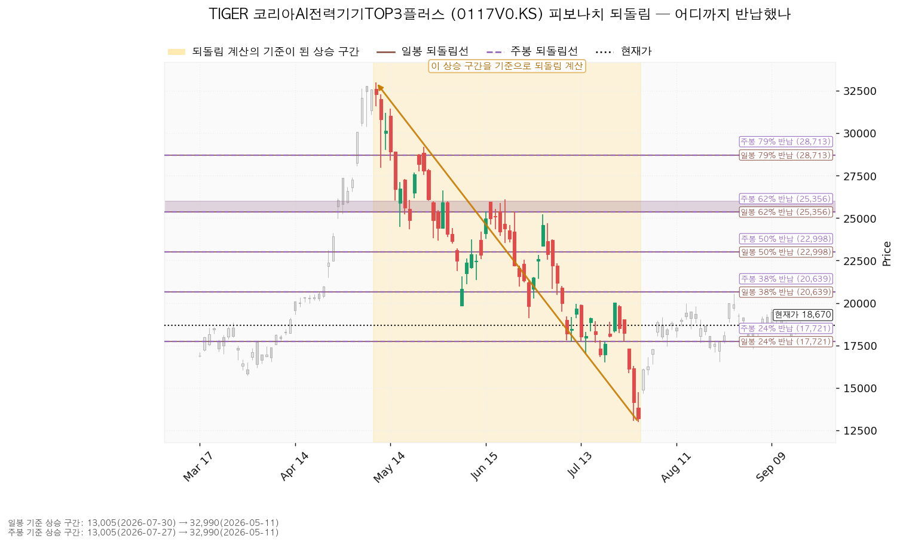
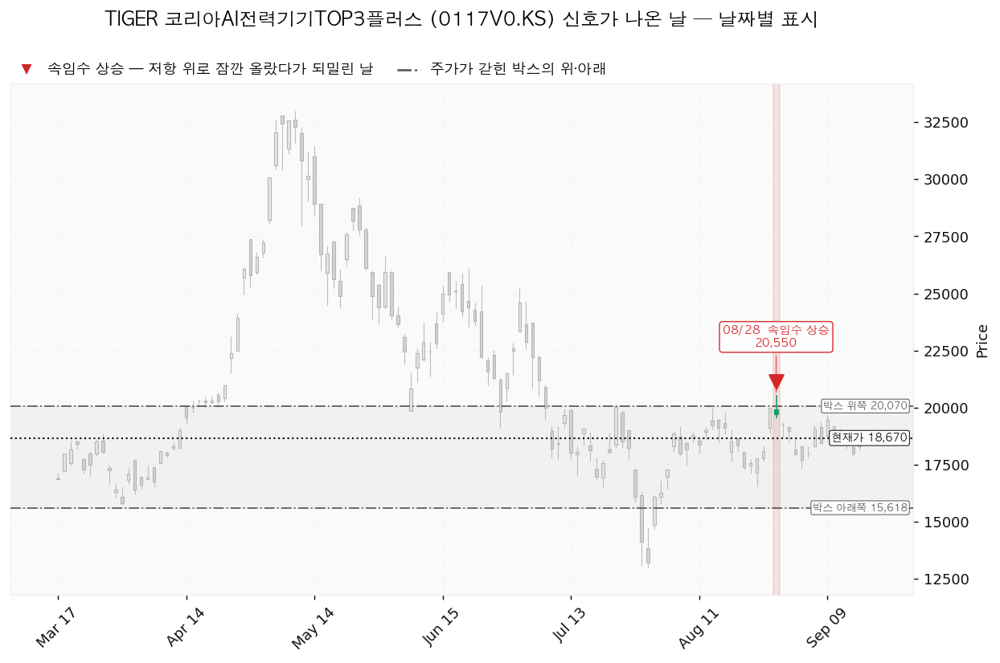
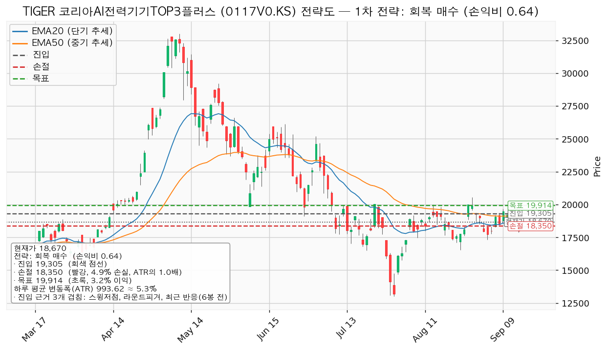
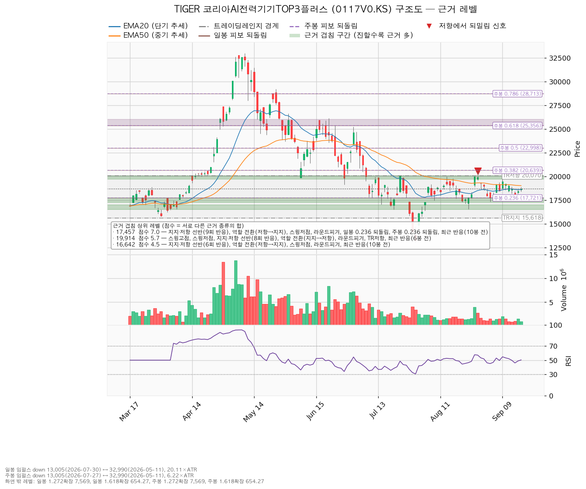

| 구분 | 가격 | 판정 방식 | 현재가 대비 | 상태 |
|---|---|---|---|---|
| 회복선(진입 조건) | 18,912원 | 일봉 종가로 회복한 뒤 되돌림에서 지지 | +1.29% (하루 변동폭의 0.24배) | 회복 대기 |
| 집행 손절 | 18,350원 | 장중 저가 도달 | -1.72% (0.32배) | 회복 매수 셋업을 실행했을 때만 유효 — 이번 리포트는 그 셋업을 패스하므로 보유 400주에는 적용되지 않습니다 |
| 관망 종료 기준 / 보유분 정리 | 17,243원 | 일봉 종가로 이탈 | -7.65% (1.44배) | 유지 중 |
| 확인선 | 19,914원 | 일봉 종가 돌파 후 되돌림 지지 확인 | +6.66% (1.25배) | 미돌파 |
| 폐기선(구조) | 15,618원 | 이탈 후 3거래일 내 회복 실패, 또는 그 전에 14,625원 아래 종가 마감 + 반등에서 저항 확인 | -16.35% (3.07배) | 유지 중 — 하루 평균 변동폭의 3배를 넘게 떨어져 있어 실무상 무효화 기준으로 작동하지 않습니다. 미진입자·보유자가 실제로 볼 선은 17,243원입니다 |
TIGER 코리아AI전력기기TOP3플러스 (0117V0.KS)는 국내 AI·데이터센터용 전력기기 상위 3종목에 집중 투자하는 국내 상장 ETF입니다.
| 항목 | 값 |
|---|---|
| 보유 수량 | 400주 (2026-08-03 1회 매수) |
| 평단 | 18,375원 |
| 현재가 | 18,670원 (9/17 일봉 종가) |
| 평가손익 | +118,000원 (+1.61%) |
| 평가금액 | 7,468,000원 |
시세 조회는 18,675원으로 일봉 종가 18,670원과 5원 차이가 납니다. 이 리포트의 모든 거리·배수 계산은 분석에 쓰인 일봉 종가 18,670원 기준입니다.
같은 날짜에 LS ELECTRIC (010120.KS)을 39주(평단 233,648원) 따로 들고 계십니다. 두 종목은 전력기기라는 같은 테마에 속하므로, 이 ETF의 비중을 정할 때 개별 종목 쪽 노출과 합쳐서 봐야 합니다.
| 항목 | 값 |
|---|---|
| 현재가 | 18,670원 (전일 대비 +1.27%) |
| EMA20 / EMA50 (단기·중기 평균 가격선) | 18,598원 / 19,020원 |
| RSI(14) — 과열·침체를 0~100으로 보는 지표 | 50.33 (중립) |
| ATR — 하루 평균 변동폭 | 994원 (주가의 5.32%) |
| 국면 | 횡보 레인지 (추세는 하락, 하단 사수 조건부) |
현재가는 EMA20 바로 위(+0.39%), EMA50 아래(-1.88%)에 있습니다. 두 선과 라운드피겨(500원·1,000원처럼 딱 떨어지는 가격으로, 주문이 몰려 반응이 잦습니다) 19,000원이 18,598~19,029원 구간에 뭉쳐 있어 이 구간이 지금 가장 가까운 저항대입니다. 아래 표에 나오는 스윙고점·스윙저점은 차트에서 눈에 띄게 꺾인 봉우리와 골짜기를 말합니다.
40봉(약 두 달)치 일봉을 창으로 잡았습니다. 조회한 전체 일봉은 225봉이고, 40·90·180봉 세 가지 창을 모두 시험한 뒤 가격이 가장 잘 지킨 창을 골랐습니다.
| 창 | 가격이 박스 안에 머문 비율 | 방향성 | 박스 폭(ATR 배수) | 유효 |
|---|---|---|---|---|
| 40봉 (채택) | 0.95 | 0.309 | 4.48 | 예 |
| 90봉 | 0.90 | 0.591 | 11.57 | 예 |
| 180봉 | 0.889 | 0.215 | 16.13 | 예 |
채택된 박스는 15,618~20,070원이며, 현재가는 박스 높이의 68.6% 지점(상단 쪽)에 있습니다.
박스 안쪽 관측치는 이렇습니다.
Wyckoff 국면 후보도 같은 이유로 미확정으로 나왔습니다. 박스 모양만으로 매집이라고 적을 수 없는 자리입니다.
되돌림선의 기준이 된 구간은 하락 구간입니다 — 5월 11일 32,990원에서 7월 30일 13,005원까지, 하루 변동폭의 20.11배짜리 낙폭입니다. 주봉도 같은 두 점(7월 27일 주 저점 13,005원 ↔ 5월 11일 32,990원, 6.22배)을 잡아 일봉과 되돌림선 값이 같습니다. 일봉·주봉 모두 계산에 성공했습니다.
| 되돌림 | 가격 | 현재가 대비 |
|---|---|---|
| 24% 반납 | 17,721원 | -5.08% |
| 38% 반납 | 20,639원 | +10.55% |
| 50% 반납 | 22,998원 | +23.18% |
| 62% 반납 | 25,356원 | +35.81% |
현재가 18,670원은 24% 선 위, 38% 선 아래입니다. 낙폭의 4분의 1가량을 되찾은 자리이며, 다음 되돌림선까지 올라가려면 확인선 19,914원과 박스 상단 20,070원을 먼저 넘어야 합니다. 하락 구간이 기준이라 확장선(7,569원·654원)은 현재가보다 아래에 찍히므로 실무에서 쓰지 않습니다.

신호로 잡힌 날은 하루입니다.
| 날짜 | 신호 | 가격 | 뜻 |
|---|---|---|---|
| 2026-08-28 | 속임수 상승(upthrust) | 20,550원 | 박스 상단 20,070원 위로 잠깐 올라갔다가 되밀린 날 |
8월 28일 이후 3주 가까이 그 가격을 다시 시험하지 못했고, 9월 9일 고점은 19,680원에서 멈췄습니다. 박스 상단을 한 번 실패해 본 상태라는 것이 확인선 19,914원을 종가로 넘기 전에는 신규 매수를 보류하는 근거입니다.

산출된 셋업이 하나뿐이어서 이것이 대표 셋업입니다. 선정 사유도 그대로 옮깁니다 — 손익비 0.64 × 구조 증명도(회복 확인형) × 근거 겹침 2.3점. 저항을 종가로 되찾은 뒤에만 들어가므로 진입가는 불리하지만 구조가 먼저 증명됩니다.
| 항목 | 값 |
|---|---|
| 이름 | 회복 매수 (reclaim_long, 롱) |
| 엣지 학파 | 모멘텀 |
| 전제 | 저항을 종가로 되찾으면 그 방향이 이어진다 |
| 성격 | 자주 틀리고 소수가 크게 맞는 유형 (이 유형의 일반적 성격이며 측정한 값이 아닙니다 — 이 종목의 과거 성적을 따로 검증한 것이 아닙니다) |
| 구조 증명도 | 회복 확인형 (가중치 1.0) |
| 진입 | 19,305원 — 근거 3개 겹침: 스윙저점 + 라운드피겨 + 최근 반응(6봉 전), 겹침 2.3점 (구간 19,110~19,500원) |
| 손절 | 18,350원 — 근거 겹침 구간(18,598~19,029원, 3.3점) 바로 아래에 두었습니다 |
| 목표 | 19,914원 — 근거 7개 겹침, 5.7점 (구간 19,680~20,070원) |
| 손익비 | 1:0.64 (손절 폭 955원 = 0.96 ATR, 4.95%) |
| 청산 계획 | T1 19,914원에서 100% — 중간 레벨이 없어 분할 없이 단일 목표입니다. 전 구간 손익비도 0.64이며, T1 체결 후 본전 스탑을 걸 잔여분이 없으므로 하한 손익비는 산출되지 않았습니다 |
| 산출 결과 | 비매력·보류 |
판정: 패스입니다. 손익비가 1을 밑돕니다. 감수하는 폭은 0.96 ATR인데 얻으러 가는 폭은 0.61 ATR입니다.
손절은 EMA20·EMA50·라운드피겨가 겹친 18,598~19,029원 구간 안쪽이 아니라 그 아래에 놓였습니다. 구간 안쪽에 두었으면 손절 폭이 좁아져 손익비가 더 좋아 보였겠지만, 지지가 될 만한 가격대 한가운데에 손절을 두는 것이라 실제로는 더 자주 털립니다. 지금의 0.64는 그 조정을 거친 값입니다. 손절이 이미 구조 아래로 밀려난 값이라, 구조적 손절 기준 손익비가 따로 산출되지는 않았습니다.
진입에서 목표까지는 0.61 ATR입니다. 하루 평균 변동폭의 2배에 못 미치므로 트레일링이나 다단 청산을 권하지 않습니다(이 2배는 관행적 기준이며 정설은 아닙니다). 집행 방침도 같습니다 — 진입 근거는 모멘텀이지만 집행은 박스 규칙을 따라 목표에서 전량 청산하고, 돌파 이후 구간은 이 포지션의 연장이 아니라 새 셋업으로 다시 잡습니다.
진입가 19,305원은 현재가보다 +3.40% 위에 있습니다. 지금 사는 것은 이 셋업의 진입이 아니므로, 현재가를 좇아 사는 선택지는 이 리포트에 없습니다.

손익비가 1을 밑돌아 집행하지 않지만, 기준은 적어 둡니다. 1회 매매에서 계좌의 1%를 잃는 것을 한도로 두면 손절 폭 4.95%에서 나오는 포지션 크기는 계좌의 20.2%입니다. 한 종목에 계좌의 13%를 넘게 싣지 않는다는 규칙에 걸리므로 13%로 제한합니다. 이미 400주를 들고 계시므로 이 숫자는 추가 매수 여지를 잴 때만 의미가 있습니다.
| 단계 | 트리거 | 뜻 | 행동 |
|---|---|---|---|
| ① 관찰 | 일봉 종가가 19,305원 아래로 마감 | 구조 이탈 시작 — 되돌아 올라오면 속임수 하락일 수 있어 아직 무효가 아닙니다 | 신규 진입만 중단. 집행 손절은 그대로 둡니다 |
| ② 경고 | 이탈 후 3거래일 안에 19,305원을 종가로 회복하지 못함, 또는 그 전에 일봉 종가가 18,311원 아래로 마감(하루 평균 변동폭의 1배만큼 더 밀림) — 둘 중 먼저 오는 쪽 | 저항 회복 실패 가능성이 우세해집니다 | 잔여 비중 축소. 반등이 나오면 이 가격에서의 반응을 확인합니다 |
| ③ 무효 | 반등이 19,305원에서 막히고 그 아래로 되밀림 (지지가 저항으로 전환) | 셋업 폐기 — 구조 해석이 틀린 것으로 확정 | 포지션 정리 후 새 구조가 만들어질 때까지 관망 |
현재가 18,670원은 이미 19,305원 아래에 있어 이 셋업은 ① 관찰 상태에서 출발합니다. 그래서 진입 조건이 성립하지 않습니다. 시나리오 폐기선 15,618원은 이 단계 판정과 다른 가격이므로 섞어 쓰지 마십시오. 집행 손절 18,350원은 이 판정과 무관하게 별도로 작동합니다.
상승 전환 — 18,912원을 종가로 회복한 뒤 지지되고, 이어 19,914원을 종가로 돌파하는 경우입니다. 구조로는 속임수 하락 확인 → 강세 신호 → 되돌림 지지 → 상승 국면 순서입니다. 행동은 18,912원 회복·지지를 확인한 뒤 분할 진입, 19,914원 돌파 시 비중 확대입니다. 다만 이번 리포트의 셋업 손익비가 0.64이므로, 그 자리에서 다시 손익비를 산출해 1을 넘을 때만 집행하십시오.
횡보 지속 — 15,618원을 지키면서 19,914원 아래 박스가 이어지는 경우입니다. 구조는 유지되며, 매물을 소화하는 데 시간이 필요한 국면입니다. 신규 진입은 보류하고 아래 셋을 추적합니다.
| 추적 항목 | 현재 관측 |
|---|---|
| 지지 테스트마다 매도 거래량이 줄어드는지 | 테스트가 7/30 1회뿐이라 추세 산출 불가 |
| 저점이 절상되는지 | 절상 중 (13,005 → 16,535 → 17,315원) |
| 상승할 때 거래량과 캔들 폭이 확대되는지 | 상승봉/하락봉 거래량비 0.99 — 아직 확대되지 않음 |
시나리오 폐기 — 15,618원 이탈 후 3거래일 내 회복에 실패하거나 그 전에 14,625원 아래로 종가 마감하고, 이후 반등에서 15,618원이 저항으로 확인되는 경우입니다. 매집이 아니라 재분산이었다는 뜻이며 추가 저점 갱신 가능성이 열립니다. 포지션 정리 후 새 매도 절정과 새 박스가 만들어질 때까지 관망합니다.
점수는 서로 다른 근거 종류의 가중치 합입니다. 같은 종류가 여러 개 겹쳐도 한 번만 더해집니다.
| 가격대 | 점수 | 근거 |
|---|---|---|
| 17,243~17,721원 (17,457) | 7.0 | 지지·저항 선반(9회 반응) + 역할 전환(저항→지지) + 스윙저점 + 라운드피겨 + 일봉 24% 되돌림 + 주봉 24% 되돌림 + 최근 반응(10봉 전) |
| 19,680~20,070원 (19,914) | 5.7 | 스윙고점 + 스윙저점 + 지지·저항 선반(8회 반응) + 역할 전환(지지→저항) + 라운드피겨 + 박스 상단 + 최근 반응(6봉 전) |
| 16,518~17,000원 (16,643) | 4.5 | 지지·저항 선반(6회 반응) + 역할 전환(저항→지지) + 스윙저점 + 라운드피겨 + 최근 반응(10봉 전) |
| 20,550~20,639원 (20,610) | 4.2 | 스윙고점 + 일봉 38% 되돌림 + 주봉 38% 되돌림 + 최근 반응(14봉 전) |
| 18,598~19,029원 (18,912) | 3.3 | EMA20 + 라운드피겨 + EMA50 + 지지·저항 선반(7회 반응) + 최근 반응(29봉 전) |
| 19,110~19,500원 (19,305) | 2.3 | 스윙저점 + 라운드피겨 + 최근 반응(6봉 전) |
아래쪽에서 가장 두꺼운 구간은 17,243~17,721원입니다. 한때 저항이던 자리가 지지로 바뀌었고 9회 반응했으며 열흘 전에도 실제로 되돌아섰습니다. 보유분 정리 기준을 이 구간의 아래 끝에 둔 이유입니다. 위쪽에서 가장 두꺼운 구간은 19,680~20,070원이고, 확인선 19,914원은 그 구간의 중심입니다. 박스 상단 20,070원은 그 위의 맥락으로만 봅니다.
확인선 19,914원이 대표 셋업의 목표와 같은 가격인 것은 모순이 아니라 분기입니다 — 그 자리에서 막히고 되밀리면 청산이고(그게 목표였습니다), 일봉 종가로 넘어서면 상승이 확정된 것이니 그때는 새 셋업으로 다시 잡습니다.

컨센서스는 증권사 애널리스트들의 전망이 모인 평균값입니다. 이 항목은 이번에 수행할 수 없었습니다. 이 종목은 ETF이고, 재무 데이터 조회가 "해당 종목의 재무 정보 없음"으로 실패해 돌아왔습니다. 목표주가(평균·최저·최고)·애널리스트 수·추천등급·후행 PER·선행 PER·EPS 추정치·추정치 90일 변화·현금흐름이 모두 비어 있습니다. 따라서 배수 비교, 목표주가 분포 내 현재가 위치, 추정치 방향으로 하락의 성격을 가르는 작업, 현금흐름 적자의 성격 구분, 상승 여력의 이익·배수 분해를 이번 리포트에서는 하지 못했습니다. 추정으로 메우지 않습니다.
목표 19,914원까지의 +6.66%는 이익 증가분과 배수 확장분으로 나눌 근거가 없으며, 구조 레벨(박스 상단 부근의 7개 근거 겹침)에서만 나온 값입니다.
대신 상대강도로 주도주 여부를 봅니다. 이 ETF 자체가 국내 AI전력기기 섹터의 기준 지표입니다.
| 섹터 | 20일 초과수익 | 5일 | 1일 |
|---|---|---|---|
| 은행 | +12.04%p | +6.60% | +0.40% |
| 건설 | +11.10%p | +1.86% | +0.08% |
| 2차전지 | +4.39%p | -0.12% | -0.29% |
| AI전력기기 (본 종목) | +3.80%p | +1.74% | +1.26% |
| 반도체 | +2.44%p | -2.26% | -0.02% |
| 조선 | +1.09%p | +5.31% | +4.54% |
국내 11개 섹터 중 20일 초과수익 4위입니다. 지수를 이기고는 있으나 주도 자리인 은행·건설과는 8%p 이상 벌어져 있습니다. 주도섹터는 아니고 상위권 추격 그룹입니다. 가격 구조가 박스 안에 갇혀 있는 것과 상대강도가 중상위인 것이 서로 어긋나지 않습니다.
ETF라 실적 발표일이 없고, 재무 조회 실패로 다음 실적일도 받지 못했습니다. 날짜가 있는 확인 이벤트는 매크로 일정에서 가져옵니다. 앞으로 5일 안에는 예정된 발표가 없습니다.
| 날짜 | 이벤트 | 그때 볼 것 |
|---|---|---|
| 2026-09-24 | 미국 신규 실업수당 청구 | 고용 둔화 신호 — 금리 경로가 전력·유틸리티 테마 밸류에이션에 걸립니다 |
| 2026-09-30 | 미국 PCE 물가 / GDP | 물가가 다시 오르면 장기금리가 올라 자본집약 테마에 불리합니다 |
| 2026-10-02 | 미국 고용보고서 (비농업 고용·실업률) | 같은 축의 확인 |
| 2026-10-14 | 미국 CPI | 이 리포트의 논지 무효화 판정 시점 |
폐기선 15,618원은 현재가에서 하루 평균 변동폭의 3.07배(-16.35%) 떨어져 있습니다. 3배를 넘으므로 실무상 무효화 기준으로 작동하지 않습니다 — 거기까지 가는 동안 이미 여러 번 판단을 수정할 기회가 지나갑니다. 가격으로 실제 작동하는 선은 17,243원입니다.
가격과 별개로 논지를 접는 조건은 이렇게 겁니다. 10월 14일 미국 CPI 발표 이후 시점에 AI전력기기 섹터의 20일 초과수익(현재 +3.80%p)이 0 아래로 내려가고 동시에 17,243원을 일봉 종가로 이탈하면, 이 박스는 매집이 아니라 재분산이었던 것으로 판정하고 보유분을 정리합니다. 두 조건 중 하나만 충족되는 경우는 관찰로 둡니다 — 상대강도만 빠지고 가격이 버티면 섹터 순환일 뿐이고, 가격만 빠지고 상대강도가 유지되면 지수 전체의 문제이기 때문입니다.
1. 보유 400주는 유지합니다. 2. 추가·신규 매수는 하지 않습니다. 회복 매수 셋업의 손익비가 0.64로 1을 밑돌기 때문입니다. 3. 17,243원을 일봉 종가로 이탈하면 400주 전량 정리합니다(-453,000원, -6.17%). 4. 18,912원을 종가로 회복하고 되돌림에서 지지되면, 그 자리에서 손익비를 다시 산출합니다. 1을 넘을 때만 집행합니다. 5. 19,914원을 종가로 넘어서면 기존 계획은 거기서 끝내고 그 위 구간은 새 리포트로 다시 잡습니다.